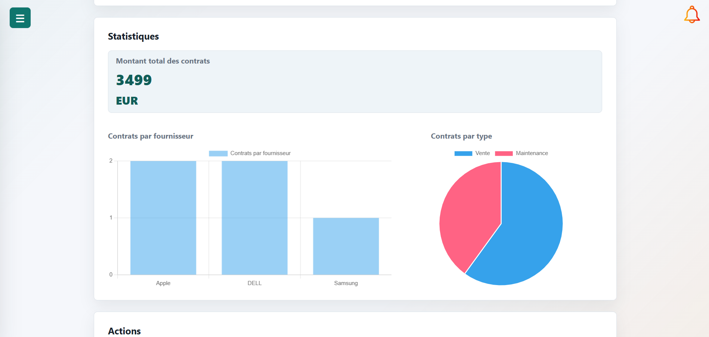

Stage · 2026
Gestionnaire de contrats
Application web développée au sein de la Direction des Systèmes d’Information de la Ville de Romainville pour centraliser et suivre les contrats avec les fournisseurs informatiques.

Description
L'objectif était de regrouper les informations liées aux contrats, leurs dates, documents et échéances dans une application utilisée par les agents de la DSI.
Le projet m'a permis de travailler sur une application complète, depuis l'analyse des besoins jusqu'au déploiement, avec une architecture MVC et une base PostgreSQL.
Travail réalisé
- Gestion des contrats et des utilisateurs
- Recherche et filtres
- Alertes d’expiration et notifications
- Gestion des documents et historique
- Statistiques et exports
- Gestion des rôles et droits d’accès
- Déploiement de l’application sur une VM de la DSI
Apprentissages critiques mobilisés
Ces apprentissages critiques sont ceux que je peux illustrer à travers ce projet. Ils sont également reliés aux autres projets dans la page Compétences.
Traduction des besoins en fonctionnalités de l’application.
Organisation du projet avec une architecture MVC et séparation des responsabilités.
Vérification des fonctionnalités et correction des problèmes rencontrés.
Utilisation de PostgreSQL pour stocker et exploiter les données.
Gestion des rôles, sessions, mots de passe et accès aux données.
Prise en compte du fonctionnement et des besoins de la DSI.
Utilisation de Trello et suivi des fonctionnalités.
Travail au sein de la DSI et utilisation de Git/GitHub.
Preuve de progression
Avant le stage, j'avais surtout développé des projets dans le cadre de la formation, avec des périmètres et des utilisateurs définis dans le contexte scolaire.
Le stage m'a permis de travailler sur une application complète dans un contexte professionnel, de prendre en compte des besoins réels, de structurer mon travail avec Git et de participer au déploiement.
Mobiliser ces connaissances dans un projet concret, expliquer mes choix techniques et produire une solution fonctionnelle adaptée au problème posé.